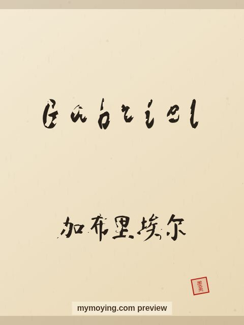

Gabriel in Chinese Calligraphy
A look at Gabriel in brush style, with the Chinese transliteration 加布里埃尔 (Jiā bù lǐ āi ěr) and the meaning of the name.

Sample. “Gabriel” in the Regular (楷书) brush style with the Chinese name 加布里埃尔 (Jiā bù lǐ āi ěr). The paid file removes the watermark.
The Chinese characters for Gabriel
As a transliteration, Gabriel is usually written 加布里埃尔 (Jiā bù lǐ āi ěr). Each character is listed below with its own dictionary meaning — the name is chosen by sound, not by meaning, and Moying does not translate names. Please have a person review the characters before any permanent use such as a tattoo.
Origin and meaning
From Hebrew, Gabriel carries the meaning “God is my strength”.
About the name Gabriel
The archangel Gabriel announced the births of John the Baptist and Jesus.
As a gift or a tattoo
People often order Gabriel as a framed gift or as a tattoo — the meaning, “God is my strength”, is part of the appeal.
Open Gabriel in the generatorFree watermarked preview. $1.99 once for a clean high-resolution download of this name in every style and setting. No subscription. Digital product, delivered instantly; see Terms.